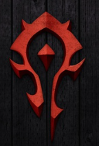
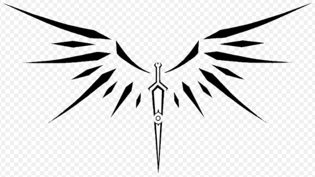
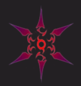

Тег audio не поддерживается вашим браузером.
Скачайте музыку
.
Выберите фракцию
Фракции
Выберите особенности
выберите фракцию:
Альянс
�
Орда
�

Авантюристы
�

Выберите расу:
Человек
Лесной Эльф
Дварф
Гном
Орк
Табакаси
Высший Эльф
Выберите класс:
Воин
Выберите подкласс
Мастер меча
�
Берсерк
�
Фехтовальщик
�
Маг
Выберите подкласс
Волшебник
�
Мистик
�
Колдуньи
�
Ловкачи
Выберите подкласс
Ниндзя
�

Хассашин
�
Лан
�
Лучник
�
Поддержка
Выберите подкласс
Шай
�
Жрец
�
Танк
Выберите подкласс
Страж
�
Нова
�
/*------------------*/
Создать персонажа
Закрыть
Сила: 10
Значение
1
2
3
4
5
6
Ловкость: 10
Значение
1
2
3
4
5
6
Интелект: 10
Значение
1
2
3
4
5
6
Телосложение: 10
Значение
1
2
3
4
5
6